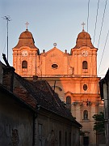

Disclaimer: These pages are not actively maintained, and some of the practical information on the site is out of date. I am working on a new version of the site that will focus more on my photos and memories of travel in Southeast Europe, and less on practical details that too easily become obsolete. In the meantime, please treat the information here with caution.
Sibiu
Three Towns in Transylvania
Transylvania is one of the most intriguing corners of Europe. It seems that the name of the province is destined to be forever linked with Dracula, but there is much more to it than that. It would take weeks or months to see everything Transylvania has to offer, but a tour of Sibu, Sighişoara, and Cluj-Napoca is a good introduction.
See the page about Braşov for information about the southeastern corner of Transylvania.
Sibiu
Sibiu (Hermannstadt in German) was the largest and wealthiest citadel of the Transylvania Saxons. The riches amassed by its guilds paid for the construction of both impressive buildings and the fortifications required to protect them, and their legacy makes Sibiu one of the most rewarding places in Transylvania to visit. Its appeal lies not so much in the major monuments as in the ordinary houses, painted in a variety of colours and featuring attic windows reminiscent of squinting eyes.
The upper town is small, but its many passages and staircases can make it quite disorienting. At its centre are three squares. The large expanse of Piaţa Mare is the site of a Roman Catholic church and of the Brukenthal Palace, where you will find one of Romania's most important art collections. The square is linked to Piaţa Mică by a passage beneath the Council Tower, which is worth visiting for the excellent views over the town. The third square, Piaţa Huet, is dominated by the Evangelical Cathedral. Don't miss the elaborate funerary monuments on the upper wall of the interior.
Folk Museum
Several steep streets and stairways lead from the upper to the lower town. One of them passes beneath the iron Liar's Bridge, so named because (1) a local legend says that it will fall down if anyone tells a lie while standing on it; (2) it was frequented by lovers who would promise each other undying love; or (3) it was a place of trade for merchants of dubious honesty. It all depends on which guide you listen to.
The Orthodox Cathedral in the lower town dates from the early 20th century. Like so many Orthodox churches it was inspired by Hagia Sophia in Istanbul. Inevitably most of these churches seem like rather pale copies of their illustrious model, but I feel that Sibiu's is one of the more successful efforts of the genre - the interior does succeed in capturing some of that same feeling of a vast space dominated by the dome.
Sibiu has a surprising number of specialised museums. If you have a particular interest in pharmaceuticals, railway technology, or hunting trophies, this is the place to come. Of course there are more conventional historical museums as well. The one that you really shouldn't miss is the ASTRA Museum of Traditional Folk Civilisation, a collection of houses, wooden churches, windmills, and agricultural technology from various parts of Romania. Located in a lovely wooded setting around a small lake just south of the city, it's a very enjoyable place to wander around - allow plenty of time as it extends over a large area.
Răşinari
Cisnădioara
Excursions from Sibiu
Cristian
Appealing as Sibiu and Transylvania's other cities are, an exploration of the area should ideally include some time in the villages and countryside. Sibiu makes an ideal base for this, as it is surrounded by interesting villages with a mixture of Saxon and Romanian traditions.
Răşinari is 12km south of Sibiu, attractively located in the foothills of the Cindrel Mountains. Like many Romanian villages it is quite large (note how high the street numbers go) while remaining unmistakably a village rather than a town. It's a colourful place, thanks to the painted gates of the houses, roadside shrines, and the rosettes that adorn the many horses pulling carts through the streets. Further along the same road is Păltiniş, a base for hiking or skiing in the Cindrel Mountains.
Just west of Răşinari is Cisnădioara, a village dominated by an unmistakable conical hill topped with a little Romanesque church. There is also a typically Saxon (but unfortified) church in the lower village. From here it's just a short walk to the much larger Cisnădie, where there is a particularly impressive fortified church with a double wall.
The countryside west of Sibiu, known as the Mărginimea Sibului, is flatter but also has its share of interesting villages. The first of these is Cristian, with another impressively fortified church overlooking a river. The string of villages continues to the west as far as Sebeş.


Sighişoara
Sighişoara
Sighişoara was never the biggest, richest, or most important of the German towns in Transylvania, but it has become one of the most popular. The handful of hilly streets within its citadel represent the concentrated essence of Saxon architecture in the province, and the jumble of pinnacles, battlement, and steep red roofs gives the town an unmistakable silhouette.
Cemetery on the Hill
The dominant element in that silhouette is the Clock Tower. The Museum of History within the tower doesn't restrict itself to mediaeval nostalgia - there is also a display about Hermann Oberth, a local boy who achieved fame in a thoroughly modern way through his work on rocketry and space travel. Inevitably, nothing in the museum can quite compete with the view from the top of the tower.
Near the tower (which really goes without saying, everything within the old walls is near) is the central Piaţa Cetăţ, surrounded by attractive 16th century houses. On on of the neigbouring streets is the birthplace of Vlad the Impaler, the real-life inspiration for Bram Stoker's Dracula. It is now a very unsinister restaurant.
The Scholars' Stairs, an unusual covered wooden staircase, leads to the church on the hill, known as The Church On The Hill. Beside the church is the Saxon Cemetery, a rambling and evocative collection of partly overgrown monuments, including a memorial to the fallen of the First World War.
Sighişoara is quite small and it's easy to see all its sights in a day, or even as a day trip from Sibiu or Braşov. However many people nominate the town as one of their favourite places in Romania and choose a longer stay. The combination of being small and popular - and the popularity boost arising from even the vaguest connection with Dracula - means that Sighişoara is a bit of a tourist trap by Romanian standards. However many of the coach parties pass through quickly, allowing the cobbled streets to return to their centuries-old peace once again.
View of Cluj from Citadel Hill

Piarists' Church
Cluj-Napoca
Cluj's architecture doesn't have the time-warp quality of Sibiu or Sighişoara, but it is an attractive place all the same. The city centre was left mostly untouched by Communist "improvements" and retains many fine 19th century buildings.
It's the Magyar rather than the German influence that is most evident in Cluj (Kolozsvár in Hungarian). Despite the attempt to render the city purely Romanian by painting just about every available surface in the colours of the national flag, it has a more cosmopolitan atmosphere than many Romanian cities. This lively feeling is partly due to the large numbers of students attending the Babeş-Bolyai University and other colleges.
The focal point of the centre is Piaţa Unirii, dominated by the Gothic bulk of St Michael's Cathedral. The interior is mostly plain and simple, with the startling exception of an elaborately carved wooden pulpit. The Baroque Franciscan Church just to the north is also worth a visit. In front of the cathedral is a statue of King Mátyás Corvinus slaying Muslims in the approved manner for God-fearing Christian aristocrats (Mátyás was the king of Hungary, although the inscription tactfully avoids drawing attention to this). Further west, in the wide open expanse of Piaţa Avram Iancu, is the gleaming white Orthodox Cathedral, a fairly conventional neo-Byzantine construction. Facing it is the even more conventional National Theatre, the work of Viennese architects Fellner and Helmer, who apparently built more or less the same opera house in just about every provincial town in the Habsburg Empire.
For a good view of the centre and the encircling apartment blocks, climb the stairs to Citadel Hill, just across the river to the north of the centre. Little remains of the citadel itself, or of the ramparts and bastions that used to protect the city.
South of the centre are the Botanical Gardens. They are claimed to be the largest in Southeast Europe, and it's not hard to believe. The garden's shady avenues make it a pleasant place for a stroll on a hot day. The same could be said of the large nearby cemetery, where you can get a feel for the city's complex history by studying the languages on the tombstones. The open air Ethnographic Museum is located in a western suburb of Cluj. Although the setting is not quite as attractive as the similar museum in Sibiu, it is still an enjoyable place to visit. There is a more conventional indoor branch of the museum in the centre of the city.
Botanical Gardens
Incidentally, Cluj is the only place in all my travels that someone has sidled up to me in the street with a whispered offer to sell a Bosch power drill. I was expecting something more in the line of currency or drugs, but what do I know? Perhaps there is a thriving trade here selling cheap DIY tools to Westerners.
Possible destinations for excursions from Cluj include the Turda Gorge and the Apuseni mountains.
Practicalities
Transylvania has a fairly dense transport network so getting around the province shouldn't present many problems.
Getting to and from Sibiu by rail requires a certain amount of planning, as services are suprisingly limited. Getting to Braşov (and thus to Bucharest) is fairly easy, with 8 daily trains (3 hours). There are three direct trains to Timişoara (5-6 hours), just one direct to Cluj (4 hours), and none at all to Sighişoara - although it is easy enough to reach the latter in a couple of hours by changing at Medias or Copşa Mică (supposedly the most polluted town in Romania). All in all it is a good idea to investigate buses and minibuses. The bus terminal is beside the train station and is quite well organised compared to many others in Romania. Actually a lot of things seem to work better in Sibiu - I am reluctant to resort to the cliché of "Teutonic efficiency", but it seems almost unavoidable.
Sibiu is more compact than Braşov or Cluj and most places are within walking distance. The exception is the open air museum which can be reached on trolley #1. Transport in the surrounding area is reasonable - by combining trains, buses, and a bit of walking it's possible to explore most of the nearby villages. Oddly enough there is a tram line through the fields to Răşinari, although it wasn't working when I was there.
Cluj is a major rail junction and it's easy to get from there to most places in Romania (except Sibiu, as already mentioned). There are 7 daily trains via Sighişoara (3.5 hours) to Braşov (5 hours). There are 13 trains to Oradea (2.5 hours), of which four continue to Budapest (6.5 hours). There are also useful direct links to Timişoara (5-6 hours) and to Suceava (6.5 hours) via Gura Humorului (for the Painted Monasteries).
Sighişoara is on a main train line across Transylvania, so it's easy to reach Cluj (7 daily, 3.5 hours), and to Braşov (at least 15, 2 hours), as well as Budapest, Oradea, and Bucharest.
More photos of Sibiu, Cluj, and Sighisoara in my Romania Galleries